Самостійна робота №11
Багатоканальні СМО
Мета:
Навчитись розраховувати основні параметри багатоканальних систем масового
обслуговування.
Завдання
для самостійного розв’язання.
1. Розглядається
цілодобова робота пункту проведення профілактичного огляду автомашин з чотирма каналами. На огляд і виявлення дефектів кожної машини
витрачається в середньому 0,5 години. На
огляд поступає в середньому 36 машин в
добу. Потоки заявок і обслуговування - прості. Якщо машина, що прибула в пункт огляду, не застає
жодного каналу вільним, вона покидає
пункт огляду необслуженою. Визначити
граничну імовірність станів і характеристики обслуговування пункту огляду. Знайти мінімальне число каналів, при
якому відносна пропускна спроможність
пункту огляду буде не менше 0,9.
2. Є
двоканальна проста СМО з відмовами. На
її вхід поступає потік заявок з
інтенсивністю 4 заявки/час. Середній час обслуговування однієї заявки 0,8 години. Кожна обслужена
заявка приносить дохід 4 у.о. Утримання кожного каналу обходиться 2 у.о. З'ясуйте,
вигідно чи невигідно збільшити число каналів до трьох.
3. Автозаправна
станція має 4 бензоколонки. Середній час заправки 2 хв. Вхідний потік
автомашин - простий з інтенсивністю 1,5 авт./хв. При всіх
зайнятих колонках вимога втрачається. Визначите імовірність відмови і середнє число зайнятих
колонок.
4. У
двоканальну СМО поступають заявки з
інтенсивністю 2 заявки в годину. Потік обслуговування має інтенсивність 4 заявки в годину. Чекати обслуговування
в системі можуть не більше двох заявок.
Визначите показники роботи СМО.
5. У
нафтоналивному порту 4 причали для заправки
танкерів, які приходять в середньому через 18 год, а час завантаження складає в середньому дві доби. У
черзі можуть стояти не більше 2
танкерів. Визначите пропускну
спроможність і імовірність простою порту.
6. У
перукарні працюють 3 майстри, а в залі
чекання розташовано 3 стільці. Потік клієнтів має інтенсивність 12 клієнтів за год. Середній
час обслуговування 2хв. Визначити відносну
і абсолютну пропускну спроможність
системи, середнє число зайнятих крісел,
середню довжину черги, середній час,
який клієнт проводить в перукарні.
7. У
багатоканальну СМО з двома каналами
обслуговування поступають заявки з інтенсивністю 0,8 заявок в год. Потік обслуговування має інтенсивність 0,5 заявок в год. Черга
заявок на обслуговування може зростати
практично необмежено. Визначити всі характеристики системи.
8. У
морському порту три причали, інтенсивність
вхідного потоку - 2,5 суден за добу. Інтенсивність навантажувально-розвантажувальних
робіт - 2 судна в день. Черга суден може
зростати практично необмежено. Визначити всі середні характеристики системи.
9. Розглядається
робота автозаправної станції (АЗС), на
якій є 2 заправних колонки. Заправка
кожної машини триває в середньому 3
хвилини. В середньому на АЗС кожні дві
хвилини прибуває машина, що потребує заправки. Число місць в черзі необмежено. Всі машини, що
встали на заправку, чекають своєї черги. Визначите: 1. Імовірність того, що на
заправці знаходиться 5 машин. 2.
Імовірність того, що новоприбулій машині доведеться чекати обслуговування.
10.
Яке оптимальне число каналів
обслуговування повинна мати СМО, якщо
інтенсивність потоку заявок дорівнює 4,
середнє число, заявок обслужених в одиницю часу
рівне 2, штраф за кожну відмову дорівнює 5, а вартість простою однієї лінії дорівнює 1 ?
11.
Скільки рівноцінних незалежних
конвеєрних ліній повинен мати цех, щоб
забезпечити ритм роботи, при якому
імовірність чекання обробки виробів має
бути менше 0.03 (кожен виріб випускається однією лінією). Відомо, що інтенсивність вступу
замовлень 30 виробів в годину, а
інтенсивність обробки виробу однією
лінією - 36 виробів в годину.
12.
Робітник обслуговує три однотипні
верстати. Кожен верстат зупиняється в
середньому двічі в годину, а процедура
наладки займає в середньому 10 хвилин. У
стаціонарному режимі функціонування системи потрібно визначити: а)
імовірність зайнятості робітника; б) середню кількість несправних верстатів; в) середнє число
налагоджуваних верстатів.
Приклад
розв’язання
Багатоканальна
СМО з відмовами
Розглянемо класичну задачу Ерланга. СМО складається з n каналів, на які поступає потік
заявок з інтенсивністю λ. Потік
обслуговування кожного каналу має інтенсивність μ. Знайти граничну
імовірність станів системи і показники
її ефективності. Розмічений граф станів
представлений на рис.1.
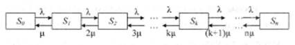
СМО може перебувати в таких станах:
S0 – всі канали вільні k=0;
S1 – зайнятий лише 1 канал k=1;
…
Sn – зайняті всі n каналів k = n, всі наступні заявки
отримують відмову.
Граничні імовірності станів виражають
середній відносний час перебування системи в кожному з станів і задаються
формулами Ерланга:
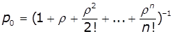
де 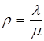 - інтенсивність
навантаження каналу.
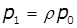, 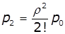, 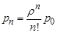, тоді 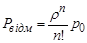
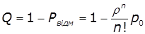
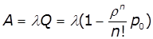
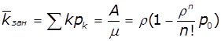
Приклад
Розглядається робота автозаправної станції
(АЗС) з трьома заправними колонками. Якщо зайнято всі три колонки, то машина не встає в чергу, а
покидає АЗС. Середній час заправки автомобіля 3 хв. Інтенсивність потоку автомобілів - 0,25 од/хв. Знайти
граничну імовірність станів і показники
ефективності роботи АЗС.
Розв’язання
Якщо
λ = 0,25 (од/хв), to6.с = 3 мин.
Тоді інтенсивність потоку обслуговування
μ =1/ to6.с = 1/3 (1/хв).
Інтенсивність навантаження каналу 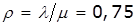, тобто в середньому за
час заправки одного автомобіля, рівного 3 хвилинам, поступить 0,75 нових
заявок. Знайдемо граничну імовірність
станів СМО:
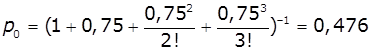,
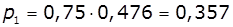, 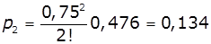, 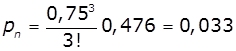
Таким чином, в граничному стаціонарному
режимі 47,6% часу АЗС не працює через
відсутність заявок. 35,7% часу зайнята лише одна колонка. 13.4% часу зайнято дві колонки, 3,3% часу зайнято три колонки.
Вірогідність відмови в ремонті Рвідм=Р3=0,033, тобто в середньому 3,3% заявок
(автомобілів) не буде обслужена.
Відносна пропускна спроможніст:
Q = 1-Рвідм = 1-0,033 = 0,967, тобто в середньому 96,7% заявок (автомобілів) будуть обслужені.
Абсолютна пропускна спроможність СМО –
число заявок, обслужених в одиницю часу: А =0,25*0,967=0,242.
Середнє число зайнятих каналів: 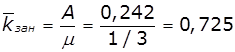 - в триканальній СМО число зайнятих каналів менше 1 – система
неефективна.
Багатоканальна
СМО з обмеженою довжиною черги
Розглянемо n-канальну СМО з чеканням, в яку
поступає простий потік заявок з
інтенсивністю λ; інтенсивність
обслуговування μ. Тривалість обслуговування - випадкова величина, підпорядкована показовому закону розподілу.
Потік обслуговування є простим пуасонівським потоком
подій. Заявка що поступила в
мить, коли всі n каналів зайняті, стає в чергу і чекає
обслуговування. Передбачимо, що
кількість місць в черзі обмежена числом
m, тобто якщо заявка прийшла тоді, коли в черзі
вже стоять m-заявок, вона покидає систему не обслуженою. Розмічений граф
станів представлений на рис.2.
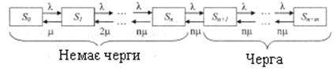
So -
всі канали вільні;
S1 – зайнятий 1 канал обслуговування;
…
Sn –
зайняті всі n каналів
Sn+1 -
зайняті всі n каналів і черзі стоїть 1
заявка;
Sn+m -
зайняті всі n каналів, в черзі всі m заявок.
Імовірність станів визначається рівняннями:
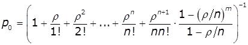
Тоді: , , …, 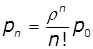
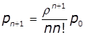, 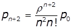, …, 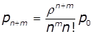
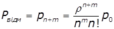
Імовірність утворення черги:

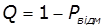, 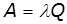, 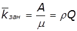
Величина черги і час перебування в черзі:
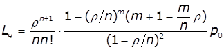, 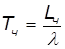
Середнє число заявок і час перебування в
системі
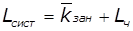, 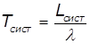
Приклад.
На
деяку базу в середньому через 30 хв прибувають
автомашини з продукцією. Середній час розвантаження однієї машини складає 1,5 години. Розвантаження
здійснюють дві бригади вантажників. На
території бази можуть знаходитися в черзі в очікуванні розвантаження не більше
4 автомашин. Визначити показники роботи
СМО.
Розв’язання
СМО
двоканальна, n = 2. Число місць в черзі
m = 4. Інтенсивність вхідного потоку λ = 2 авт./год. Інтенсивність обслуговування μ = 1/tобс.с = 2/3 - машини за год. Інтенсивність потоку
обслуговування 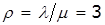.
Імовірність
що всі бригади вільні:
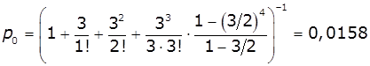
Імовірність відмов: 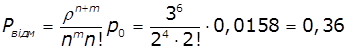.
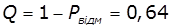, 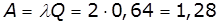маш.хв.
Середнє число зайнятих бригад: 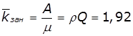.
Середнє число заявок в черзі:
 авт,
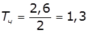год.
авт,
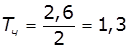год.
Середнє число заявок і час перебування в
системі
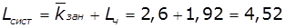, 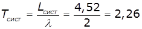год.
Багатоканальна
СМО з необмеженою довжиною черги
Розглянемо n-канальну систему масового обслуговування з необмеженою чергою, в яку
поступає простий потік заявок з інтенсивністю λ і інтенсивністю
обслуговування μ (тобто в середньому безперервно зайнятий канал видаватиме
ρ=λ/μ обслужених заявок в
одиницю часу).
Потік обслуговування є простим пуасонівським
потоком подій. Заявка, що поступила в
мить, коли канал зайнятий, стає в чергу
і чекає обслуговування. Розмічений граф станів представлений на рис. 3.
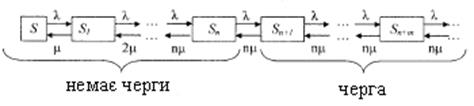
So -
всі канали вільні k=0;
S1 – зайнятий 1 канал обслуговування k=1;
…
Sn –
зайняті всі n каналів k=n, черги немає
Sn+1 -
зайняті всі n каналів і черзі стоїть 1
заявка k=n+1;
Sn+m -
зайняті всі n каналів, в черзі всі m заявок k=n+m
…
Оскільки обмеження на довжину черги
відсутнє, то відмов нема:
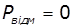, 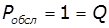, 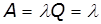.
Імовірність
станів визначається рівняннями:

Тоді: , , …,
, , …,
Імовірність утворення черги:
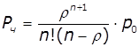, 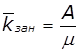
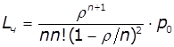,
Середнє число заявок і час перебування в
системі
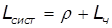,
Якщо 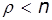 то процес
обслуговування стійкий.
Приклад.
У
магазині працюють 3 продавці. Покупці магазина
утворюють простий потік вимог з інтенсивністю 90 чоловік в год.
Інтенсивність обслуговування одного
покупця складає 60 чоловік в год. Знайдіть характеристики обслуговування.
Розв’язання
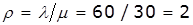. По умові р < п,
отже, черга не зростатиме до безкінечності і в системі настає граничний
стаціонарний режим роботи. Знайдемо
імовірність того, що біля кас відсутні
покупці:
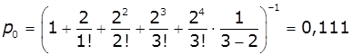.
Імовірність того, що біля кас
обслуговуються один, два, три покупці:
, ,
Імовірність того , що в черзі стоять один,
два, … покупці:
, , … .
Імовірність утворення черги і середнє число
занятих кас:
, .
, чол./год.
Середнє число заявок і час перебування в
системі
, чол./год.
Контрольні
запитання
1. Визначення
систем масового обслуговування.
2. Одно
канальні і багатоканальні СМО.
3. Класифікація
СМО по наявності черг.
4. Показники
роботи багатоканальних СМО.